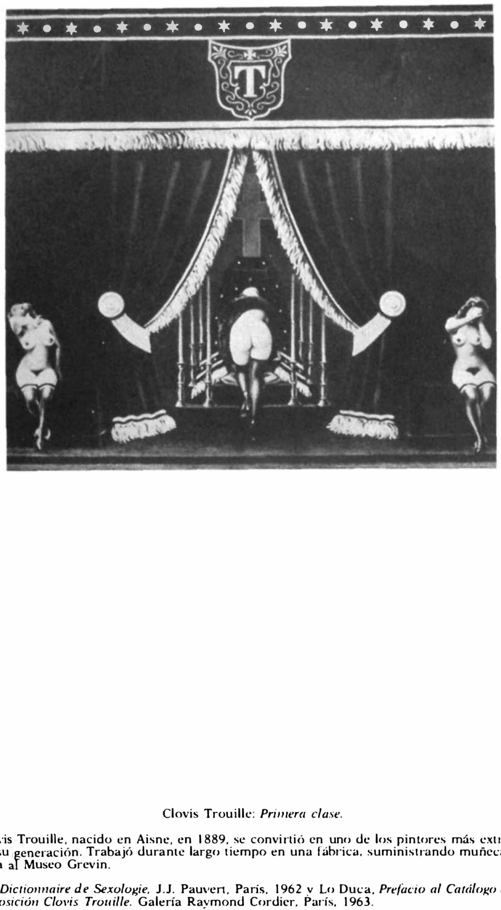

Lágrimas de Eros · Obra 116 de 121
Primera clase (Mes funérailles)
Clovis Trouille (1940)
Un escenario fúnebre bajo un dosel con la inicial «T»: una figura con la falda levantada ante un catafalco y dos mujeres desnudas que se tapan la cara. Bataille la acompaña de una nota sobre el pintor, que trabajó mucho tiempo en una fábrica que hacía maniquíes de cera para el Musée Grévin.
Lo que hace que destaque
Un escenario fúnebre bajo un dosel con la inicial «T»: una figura con la falda levantada ante un catafalco y dos mujeres desnudas que se tapan la cara. Bataille la acompaña de una nota sobre el pintor, que trabajó mucho tiempo en una fábrica que hacía maniquíes de cera para el Musée Grévin.
Contexto histórico
Sin identificar en catálogos en línea; sede actual desconocida. Su título es «Mes funérailles» (1); «Première classe» es uno de los alternativos, y con él la cita Christie's en la bibliografía del lote («G. Bataille, Les Larmes d'Éros, 1961, p. 228, titré: Première Classe»). Pintado en 1940; Volta lo fechó en 1946. Quedó en el taller del artista y con sus herederos hasta la venta de 2024 (119.700 €); se expuso en la Exposición internacional del surrealismo de 1947.
Autoría y procedencia
Clovis Trouille (1889-1975), pintor surrealista francés célebre por sus obras anticlericales, satíricas y de un erotismo carnavalesco desbordante.
En los libros
Las lágrimas de Eros, de Georges Bataille · Lámina de la p. 198
«Clovis Trouille, nacido en el Aisne en 1889, llegó a ser uno de los pintores más extraños de su generación.»Clovis Trouille, born in Aisne in 1889, became one of the strangest painters of his generation.Georges Bataille, «Las lágrimas de Eros» (1961), traducido al español de la ed. inglesa de City Lights (1989), p. 198
Ficha pendiente de contrastar con fuentes académicas.
Otras vistas
